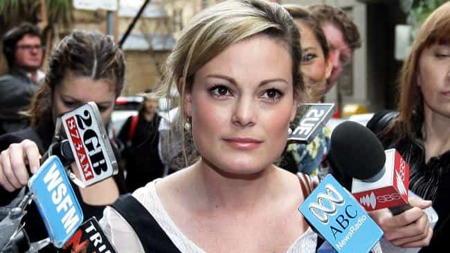

< < < Back
Female Intern Awarded $18 Million Because Her Boss Asked For Sex And Wrote Mean Things On The Internet – Return Of Kings
Hanna Bouveng, a mere former intern of Wall Street CEO Benjamin Wey, has been awarded $18 million in compensatory and punitive damages for both defamation and sexual harassment. One of the key findings of the court in relation to the claimed sexual harassment is that Wey “panted over” Bouveng and requested sex repeatedly.
Keen to dig her ex-boss’ social grave further, Bouveng made a point of mentioning that Wey lasted a grand total of two minutes during coitus. Interestingly, the gargantuan $18 million figure is much more than the standard or even above-average settlement given to those contracting terminal cancer due to negligence or other malfeasance, those permanently paralyzed by the actions or omissions of others, or those who lose a limb and thus have their whole life and mobility turned upside down.
The defamation aspect of the case is the most surprising part, as most people usually predict that the sexual harassment component would provide the bulk of the judicially-sanctioned award. In this climate of “lose $5 million just for touching a woman,” that’s what would make sense in a nonsensical sort of way.
Nevertheless, $16 million was awarded for punitive damages concerning the defamation, the worst of which was Wey smearing Bouveng in his webzine publication and sending her father correspondence about finding her in bed with another man. The CEO of New York Global Group told Bouveng’s father that the second man was homeless, drunk and potentially on drugs.
If the harassment went on for so long, why didn’t Bouveng just leave? Harassment is wrong, but women are pathetically not expected to have any responsibility for extracting themselves from these difficult situations. Are they automatons or human beings?
Let’s be clear: Benjamin Wey grossly crossed the line here. Although I’m not convinced that everything he said about her wasn’t true (after all, how can you prove or disprove anything that’s he-said-she-said?), him resorting to attacking her in his webzine was spectacularly stupid. It plays right into the hands of any half-aware and remotely savvy woman who wants to take a former male lover and employer to the proverbial cleaners in a courtroom.
The different avenues for jaded or otherwise revenge-seeking women to seek redress nowadays are beyond numerous. In addition, female plaintiffs, or complainants to the police in the case of alleged crimes, are held accountable for vexatious and unfounded (or blatantly false) assertions so rarely that their numbers should be considered insignificant.
If a man miraculously “proves” his innocence (at least a third and typically more than half of society always regards him as guilty), his name is indelibly tarred with the original allegations. In civil cases across a range of jurisdictions, many legal costs are not awardable to the defendant a judge rules in favor of.
Moreover, most plaintiffs usually have far less money than the defendants they are going after, and so in a great deal of instances the latter group have no real chance of recovering any of the substantial fees they spend trying to defend themselves, let alone counter-suing for defamation or via some other method.
Screw the boss and then get a massive fortune that people who are maimed for life never get

This woman lost her legs due to medical negligence. Would she get $18 million, even if it were a private hospital? Of course not.
If anything, Hanna Bouveng’s massive financial windfall demonstrates the hypergamy, both romantic and socio-judicial, that woman can freely seek nowadays. You can screw your multimillionaire boss and it’s largely impossible for a court to find that any subsequent suit pertaining to sexual harassment is either frivolous and savagely opportunistic or mendacious.
And that same court is apt to come to your rescue, presenting you with millions, while the lazy bludgers and battlers (the amputees, the war veterans, those struck by incurable tumors and cancers because of someone else’s oversight or greed) are endowed with a pittance of Bouveng’s $18 million despite the lifetime of suffering or imminent death that awaits them.
You would be foolish to think that this happens only in America. In Australia, Kristy Fraser-Kirk tried to sue mammoth Australian retailer David Jones for AU$37 million over alleged sexual harassment by one of the company’s male executives. She eventually found her way into a AU$850,000 settlement based on claims not fully tested in court, including the executive supposedly pulling her bra strap.
I don’t condone such behavior, when it is fairly and vigorously proven, but $850,000 is more than many Australian workers got after contracting mesothelioma (a devastatingly brutal form of cancer) from the brazen negligence of the corporation James Hardie.
A famous politician falsely accused of being a pedophile on NATIONAL television was awarded just $300,000

Lord McAlpine was falsely accused of being a long-term pedophile. $300,000 is all he got from the woefully culpable BBC. Why? Courts and society need more sex crime convictions, so McAlpine was just collateral damage and not worth the sort of money doled out to a precious Hanna Bouveng.
Disgustingly, men falsely accused of pedophilia, the most socially reviled crime in our society, never receive anywhere near the sum that has landed in Hanna Bouveng’s lap. Similar injustices greet men wrongly labeled as “regular” rapists. The best contemporary example of this farce was that of Lord McAlpine, the late respected British Conservative politician. He was given a paltry £185,000 (less than US$300,000 today) over a BBC program that referred to him as an historical pedophile.
Unlike the Bouveng-Wey debacle, this was across national television in the United Kingdom, stoked by the flurry of child sex allegations that had been recently thrown around about the dead British comedian Jimmy Saville. Given Lord McAlpine’s prominent profile over many decades as a leading politician and member of the nobility, people knew who he was and his reputation suffered disastrously as a result.
His plight may not have been the subject of litigation, but it is beyond safe to assert that this represented the maximum amount he could expect to extract from the BBC via the legal system.
It’s worth noting that, irrespective of whether Benjamin Wey’s statements about her were defamatory, Bouveng was not accused of a truly deplored felony, let alone one that frequently results in entire communities hunting down and shaming purported perpetrators in a manner like with allegations of pedophilia.
Where is the balance?

Kristy Fraser-Kirk wanted AU$37 million and her final settlement of AU$850,000 was still ludicrous.
Sexual harassment does exist, but the threshold for proving it is so painfully substandard nowadays that the flimsiest of accusations amounts to a verifiable conviction in the eyes of public and judicial opinion. Consistently as well, sexual harassment, which is often just a variety of bullying, is considered so heinous a “crime” that it outranks the suffering of those who are deprived of their literal lives or limbs. If this is not the case, why do the court settlements perpetually reflect this?
Balance must be restored. Hanna Bouveng deserved something closer to $18, not $18 million.
Read More: Billionaire Leaves Greedy Daughter $3 Million, Judge Orders She Get $25 Million